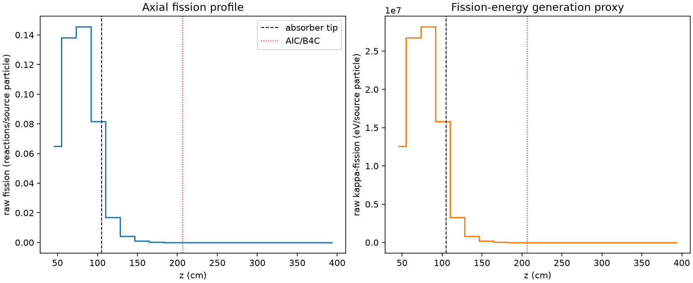
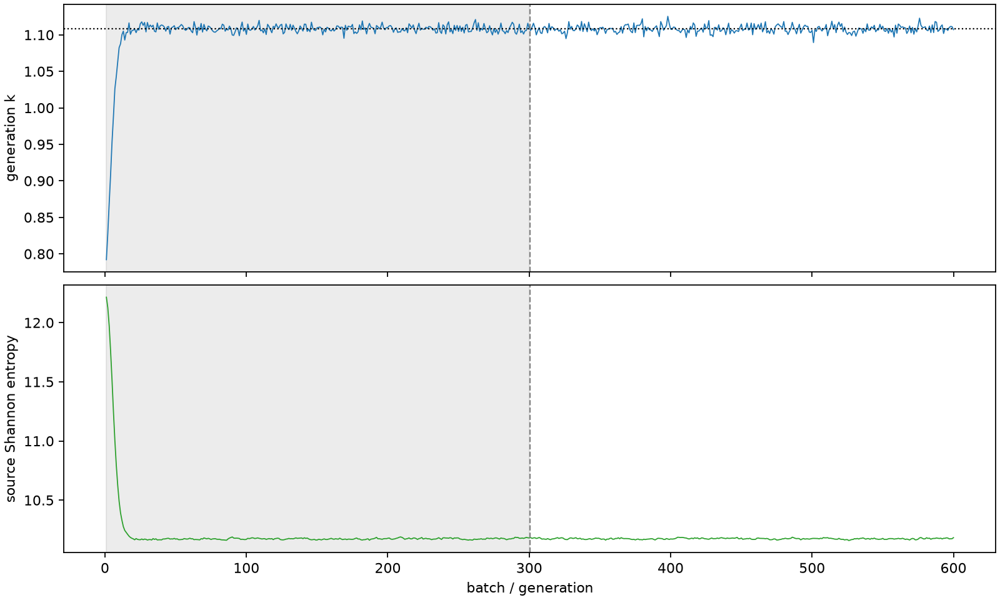

| field | value |
|---|---|
| experiment | V2-STAGE_256_OGRENCI_01-0002 |
| k | 1.108153855266549 |
| MC standard error | 0.0001853535526734114 |
| seconds | 1037.877848944976 |
| acceptance | not_assessed |
| convergence | review_required |
Completed is output integrity only; physical and statistical review required. Zero tallies do not prove zero production or zero uncertainty.
| diagnostic | value |
|---|---|
| geometric fuel voxels | 5280 |
| zero fission tally voxels | 2076 |
| low signal fuel voxels | 2993 |
| low signal fission share | 7.521731095570378e-05 |
| low signal kappa share | 7.524979675282631e-05 |
| important fission share | 0.9504140636697074 |
| previous filter included | 2287 |
| duration estimate s | 1562.5173488400023 |
| actual minus estimate s | -524.6394998950263 |
| fission relative MC error | statistics |
|---|---|
| all_geometric_fuel | {"voxels": 5280, "positive_mean_voxels": 3204, "zero_mean_voxels": 2076, "undefined_relative_error_voxels": 2076, "median": 0.04282045252409018, "p95": 0.9999999999999999, "maximum": 1.0000000000000002} |
| low_signal | {"voxels": 2993, "positive_mean_voxels": 917, "zero_mean_voxels": 2076, "undefined_relative_error_voxels": 2076, "median": 0.609276242362432, "p95": 1.0, "maximum": 1.0000000000000002} |
| important_95pct | {"voxels": 1056, "positive_mean_voxels": 1056, "zero_mean_voxels": 0, "undefined_relative_error_voxels": 0, "median": 0.0048934705860671935, "p95": 0.0064293060119297255, "maximum": 0.007881646904524708} |
| outside_previous_filter | {"voxels": 2993, "positive_mean_voxels": 917, "zero_mean_voxels": 2076, "undefined_relative_error_voxels": 2076, "median": 0.609276242362432, "p95": 1.0, "maximum": 1.0000000000000002} |
| kappa_fission relative MC error | statistics |
|---|---|
| all_geometric_fuel | {"voxels": 5280, "positive_mean_voxels": 3204, "zero_mean_voxels": 2076, "undefined_relative_error_voxels": 2076, "median": 0.04275722486503422, "p95": 0.9999999999999999, "maximum": 1.0000000000000002} |
| low_signal | {"voxels": 2993, "positive_mean_voxels": 917, "zero_mean_voxels": 2076, "undefined_relative_error_voxels": 2076, "median": 0.6082074074008479, "p95": 1.0, "maximum": 1.0000000000000002} |
| important_95pct | {"voxels": 1056, "positive_mean_voxels": 1056, "zero_mean_voxels": 0, "undefined_relative_error_voxels": 0, "median": 0.004887703407004845, "p95": 0.0064212317971230806, "maximum": 0.007872430273381876} |
| outside_previous_filter | {"voxels": 2993, "positive_mean_voxels": 917, "zero_mean_voxels": 2076, "undefined_relative_error_voxels": 2076, "median": 0.6082074074008479, "p95": 1.0, "maximum": 1.0000000000000002} |
| axial bin | fission share | kappa-fission share |
|---|---|---|
| 1 | 0.14339228264434553 | 0.14339405489054446 |
| 2 | 0.30528773827218403 | 0.3052763973116802 |
| 3 | 0.32149925133775553 | 0.32148696290671197 |
| 4 | 0.180234791415422 | 0.18023823568175049 |
| 5 | 0.03748397796454753 | 0.03749773992104289 |
| 6 | 0.00914889748364304 | 0.009152414124267996 |
| 7 | 0.002252148225704894 | 0.0022529864662340048 |
| 8 | 0.0005455574409877017 | 0.0005457787954481854 |
| 9 | 0.00012205153786577567 | 0.0001221104714001329 |
| 10 | 2.6866636459093328e-05 | 2.68798289101334e-05 |
| 11 | 5.324466301613425e-06 | 5.326245258508579e-06 |
| 12 | 8.328642683634886e-07 | 8.335838740417303e-07 |
| 13 | 8.640852832422506e-08 | 8.659735454407842e-08 |
| 14 | 1.9330198643181633e-07 | 1.9317552244907836e-07 |
| 15 | 0.0 | 0.0 |
| 16 | 0.0 | 0.0 |
| 17 | 0.0 | 0.0 |
| 18 | 0.0 | 0.0 |
| 19 | 0.0 | 0.0 |
| 20 | 0.0 | 0.0 |
Histories include the inactive-to-active transition at batch 300. kappa-fission approximates fission energy production, not total heat deposition.

